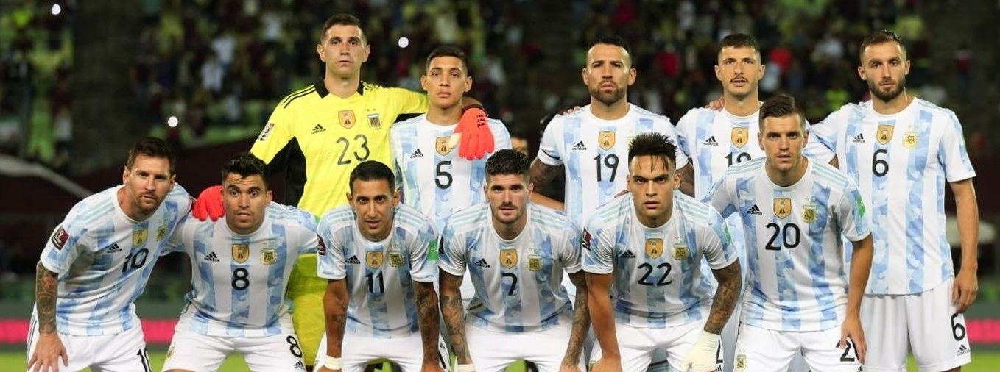

CLASIFICADOS A QATAR 2022

La Selección Argentina finalizó con saldo positiva otra doble fecha de las Eliminatorias Sudamericanas. El equipo de Lionel Scaloni venció a Uruguay, igualó ante Brasil y, por la derrota de Chile ante Ecuador, selló su pase al Mundial de Qatar 2022 cuando aún restan cuatro fechas y la resolución de la FIFA respecto al clásico ante la Verdeamarela que terminó suspendido tras un escándalo. De esta manera, la Albiceleste consiguió cerrar la clasificación a una Copa del Mundo más temprana en toda su historia.
El conjunto nacional marcha como escolta con 29 unidades, seis menos que la Verdeamarela, que lidera la tabla con 35 y ambos son los únicos dos seleccionados de Sudamérica que aseguraron su boleto. Es así como los de Scaloni lograron el pase a Qatar pese a que todavía tiene cinco partidos pendientes.
Con esta actuación, Argentina es la primera vez que puede pensar en la gran cita con tanto tiempo de anticipación. Aunque es cierto que desde que las Eliminatorias se disputan con el acutal formato, la Albiceleste no ha tenido mayores inconvenientes a excepción de Sudádfrica 2010 y Rusia 2018.
Hasta el momento, ya son 13 los países que tienen un lugar reservado en la próxima Copa del Mundo. A los dos sudamericanos se suma el local y otros diez elecnos europeos que son: Alemania, Dinamarca, Francia, Bélgica, Croacia, Serbia, España, Suiza, Inglaterra y Países Bajos.